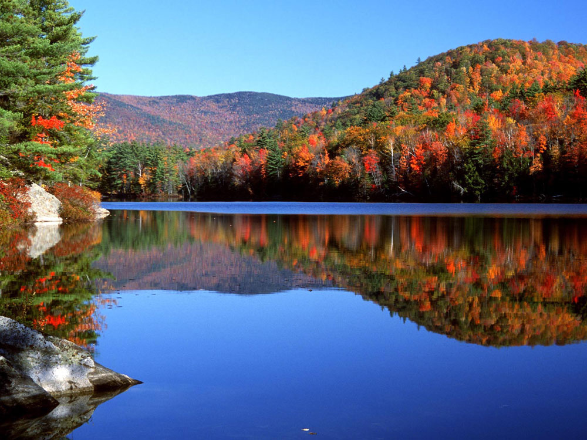

New Hampshire ist ein Bundesstaat der Vereinigten Staaten in der Region Neuengland. Im Westen grenzt er an den Bundesstaat Vermont,
im Osten an Maine, im Süden an Massachusetts und im Norden an die kanadische Provinz Québec. Bei einer Fläche von 24.216 km² zählt der Bundesstaat etwa 1,3 Mio. Einwohner.
Der überwiegende Teil der Bevölkerung lebt im Süden des Bundesstaats, der Norden ist von Mittelgebirgen geprägt. Die Hauptstadt ist Concord mit fast 43.000 Einwohnern,[1]
die größte Stadt ist Manchester mit 110.000.
Quellen- und Lizenzhinweis:
Dieser Text basiert auf dem Wikipedia-Artikel
New Hampshire
(geänderte Fassung) und steht unter der Lizenz
Creative Commons Attribution-ShareAlike 4.0 International (CC BY-SA 4.0).
Das Bild ist von
Visit USA